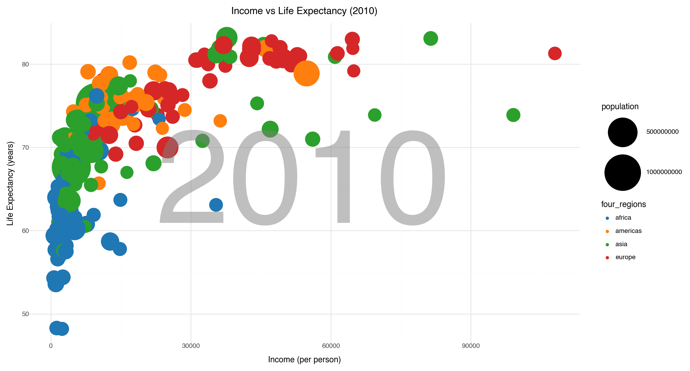
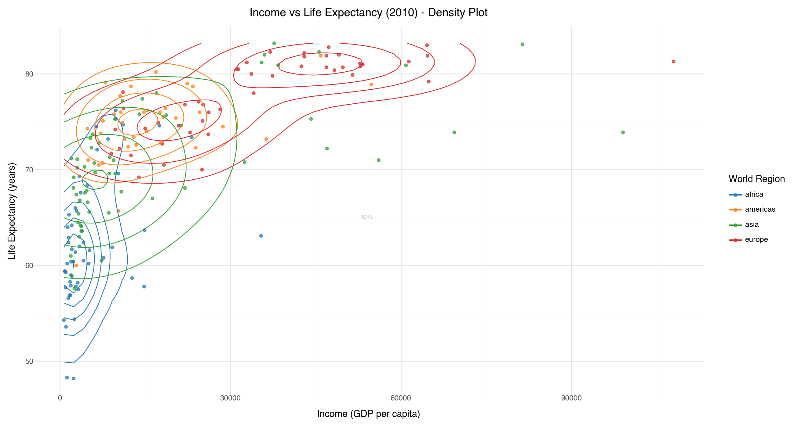
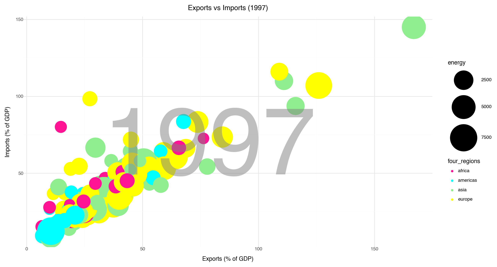
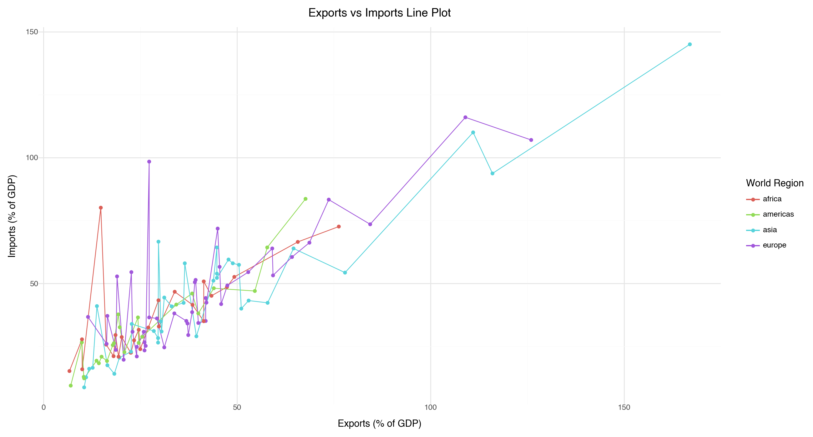
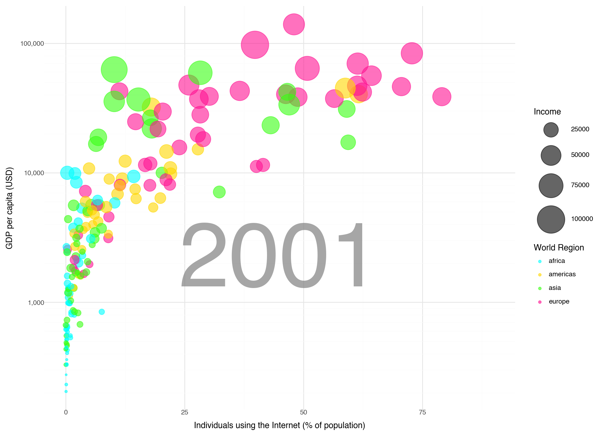
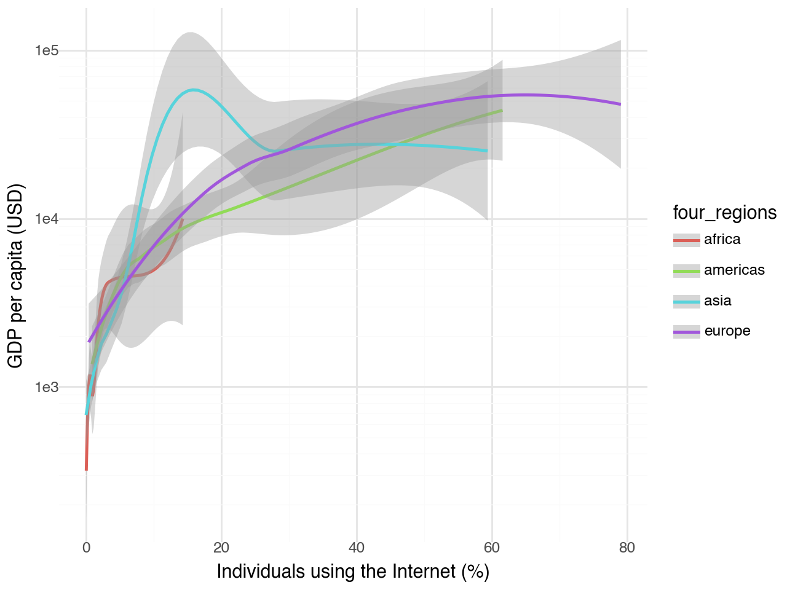

import pandas as pd
from plotnine import ggplot, aes, geom_point, scale_size, scale_color_brewer, labs, theme_minimal,xlim,geom_text,scale_y_log10LAB 1 ASSIGNMENT: GAPMINDER
TASK 1
1.Identify, and list here, what aesthetics are being used and which variables are being mapped to each aesthetic.
x-axis: Income
y-axis: Life expectancy (in years)
Size of bubbles: Population (represented by the size of each bubble)
Color of bubbles: World regions (the regions are color-coded, as per the legend on the right)
### 2.Import the q1data.csv dataset.
data1 = pd.read_csv('q1data.csv')data1.head(10)| income | life_exp | population | year | country | four_regions | six_regions | eight_regions | world_bank_region | |
|---|---|---|---|---|---|---|---|---|---|
| 0 | 1910.0 | 61.0 | 29200000.0 | 2010 | Afghanistan | asia | south_asia | asia_west | South Asia |
| 1 | 11100.0 | 78.1 | 2950000.0 | 2010 | Albania | europe | europe_central_asia | europe_east | Europe & Central Asia |
| 2 | 11100.0 | 74.7 | 36000000.0 | 2010 | Algeria | africa | middle_east_north_africa | africa_north | Middle East & North Africa |
| 3 | 46900.0 | 81.9 | 84500.0 | 2010 | Andorra | europe | europe_central_asia | europe_west | Europe & Central Asia |
| 4 | 7680.0 | 60.8 | 23400000.0 | 2010 | Angola | africa | sub_saharan_africa | africa_sub_saharan | Sub-Saharan Africa |
| 5 | 17600.0 | 76.0 | 88000.0 | 2010 | Antigua and Barbuda | americas | america | america_north | Latin America & Caribbean |
| 6 | 24600.0 | 76.0 | 40900000.0 | 2010 | Argentina | americas | america | america_south | Latin America & Caribbean |
| 7 | 9730.0 | 74.2 | 2880000.0 | 2010 | Armenia | europe | europe_central_asia | europe_east | Europe & Central Asia |
| 8 | 45600.0 | 82.3 | 22200000.0 | 2010 | Australia | asia | east_asia_pacific | east_asia_pacific | East Asia & Pacific |
| 9 | 53300.0 | 81.0 | 8410000.0 | 2010 | Austria | europe | europe_central_asia | europe_west | Europe & Central Asia |
data1.dropna(inplace=True)data1.isnull().sum()income 0
life_exp 0
population 0
year 0
country 0
four_regions 0
six_regions 0
eight_regions 0
world_bank_region 0
dtype: int643. Recreate the plot as best you can using plotnine
import pandas as pd
from plotnine import ggplot, aes, geom_point, geom_text, scale_y_continuous, labs, theme, element_text,annotatefrom plotnine import (
ggplot, aes, geom_point, geom_text, labs, scale_size_continuous,
scale_color_manual, theme, element_text, annotate
)
import matplotlib.pyplot as pltplot = (ggplot(data1, aes(x='income', y='life_exp', size='population', color='four_regions')) +
geom_point(alpha=1) +
scale_size_continuous(range=[9, 30]) +
scale_color_manual(values=["#1f77b4", "#ff7f0e", "#2ca02c", "#d62728"]) +
annotate("text", x=54000, y=65, label="2010", size=180, color='gray', alpha=0.5, fontweight='bold') +
labs(title="Income vs Life Expectancy (2010)",
x="Income (per person)",
y="Life Expectancy (years)") +
theme_minimal()+
theme(figure_size=(13,7))
)
plot.show()
4.What other geometries could you use here besides geom_point? Provide an actual plot of another geometry being used here and why it’s good or bad for visualizing these data.
from plotnine import ggplot, aes, geom_density_2d, scale_size_continuous, scale_color_manual, annotate, labs, theme_minimal, theme
# Create the density plot
plot = (
ggplot(data1, aes(x='income', y='life_exp', color='four_regions')) +
geom_point(alpha=0.7) +
geom_density_2d() +
scale_size_continuous(range=[9, 30]) +
scale_color_manual(values=["#1f77b4", "#ff7f0e", "#2ca02c", "#d62728"]) + # New colors for regions
annotate("text", x=54000, y=65, label="2010", size=6, color='gray', alpha=0.5, fontweight='bold') + # Year annotation
labs(title="Income vs Life Expectancy (2010) - Density Plot",
x="Income (GDP per capita)",
y="Life Expectancy (years)",
color='World Region') +
theme_minimal() +
theme(figure_size=(13, 7))
plot/Users/snehanarayanan/anaconda3/lib/python3.11/site-packages/plotnine/guides/guides.py:207: PlotnineWarning: Cannot generate legend for the 'size' aesthetic. Make sure you have mapped a variable to it
It’s Good because:
geom_density_2d helps visualize areas where countries cluster on the income-life expectancy plane.
It gives a sense of the concentration of countries in different income ranges and life expectancy levels.
TASK 2
1.Identify, and list here, what aesthetics are being used and which variables are being mapped to each aesthetic.
x-axis: Exports (% of GDP)
y-axis: Imports (% of GDP)
size: energy
color: World Regions
data2 = pd.read_csv('q2data.csv')data2.head()| imports | exports | energy | year | country | four_regions | six_regions | eight_regions | world_bank_region | |
|---|---|---|---|---|---|---|---|---|---|
| 0 | NaN | NaN | NaN | 1997 | Afghanistan | asia | south_asia | asia_west | South Asia |
| 1 | 36.7 | 11.5 | 427 | 1997 | Albania | europe | europe_central_asia | europe_east | Europe & Central Asia |
| 2 | 22.5 | 22.6 | 825 | 1997 | Algeria | africa | middle_east_north_africa | africa_north | Middle East & North Africa |
| 3 | NaN | NaN | NaN | 1997 | American Samoa | NaN | NaN | NaN | NaN |
| 4 | NaN | NaN | 434 | 1997 | Angola | africa | sub_saharan_africa | africa_sub_saharan | Sub-Saharan Africa |
data2.isnull().sum()imports 35
exports 35
energy 69
year 0
country 0
four_regions 24
six_regions 24
eight_regions 24
world_bank_region 24
dtype: int64data2.dropna(inplace=True)data2.isnull().sum()imports 0
exports 0
energy 0
year 0
country 0
four_regions 0
six_regions 0
eight_regions 0
world_bank_region 0
dtype: int64data2.columnsIndex(['imports', 'exports', 'energy', 'year', 'country', 'four_regions',
'six_regions', 'eight_regions', 'world_bank_region'],
dtype='object')data2['exports'] = pd.to_numeric(data2['exports'], errors='coerce')
data2['imports'] = pd.to_numeric(data2['imports'], errors='coerce')
data2['energy'] = pd.to_numeric(data2['energy'], errors='coerce')from plotnine import ggplot, aes, geom_point, scale_size_continuous, scale_color_manual, annotate, labs, theme_minimal, theme, element_text, element_rect, element_line, lims
# Create the plot
plot = (ggplot(data2, aes(x='exports', y='imports', size='energy', color='four_regions')) +
geom_point(alpha=1) + # Adjust opacity for visibility
scale_size_continuous(range=[9, 30]) + # Set range for bubble sizes
scale_color_manual(values=["#ff1493", "#00ffff", "#90ee90", "#ffff00"]) + # Adjust colors: dark pink, aqua blue, light green, yellow
annotate("text", x=79, y=65, label="1997", size=180, color='gray', alpha=0.5, fontweight='bold') + # Year annotation
labs(title="Exports vs Imports (1997)",
x="Exports (% of GDP)",
y="Imports (% of GDP)") +
theme_minimal() + # This should not be a standalone statement
theme(figure_size=(13,7)) # Set figure size using theme
)
plot.show()/Users/snehanarayanan/anaconda3/lib/python3.11/site-packages/plotnine/layer.py:364: PlotnineWarning: geom_point : Removed 2 rows containing missing values.
4.What other geometries could you use here besides geom_point? Provide an actual plot of another geometry being used here and why it’s good or bad for visualizing these data.
data2['exports'] = pd.to_numeric(data2['exports'], errors='coerce')
data2['imports'] = pd.to_numeric(data2['imports'], errors='coerce')# Check for NaN values
print(data2[['exports', 'imports']].isna().sum())
# Drop rows with NaN values
data2 = data2.dropna(subset=['exports', 'imports'])exports 0
imports 0
dtype: int64from plotnine import ggplot, aes, geom_line, geom_point, labs, theme_minimal
# Create a line plot with points
plot_line = (ggplot(data2, aes(x='exports', y='imports', color='four_regions')) +
geom_line() + # Add lines to connect the points
geom_point() + # Optionally add points for clarity
labs(title="Exports vs Imports Line Plot",
x="Exports (% of GDP)",
y="Imports (% of GDP)",
color="World Region") +
theme_minimal() +
theme(figure_size=(13, 7)) # Set figure size using theme
)
plot_line.show()
Advantage:
> Line plots work well for this data because they show trends in exports and imports over time or across regions, making it easy to compare and see how the two are related.Disdvantage:
> They might hide important details when data points overlap and can lead to wrong interpretations if the data isn't in a clear order or has outliers.TASK 3
1.Identify, and list here, what aesthetics are being used and which variables are being mapped to each aesthetic.
x-axis: internet_users
y-axis: gdp
size: Income
color: four_regions
data3 = pd.read_csv('q3data.csv')data3.head()| internet_users | gdp | income | year | country | four_regions | six_regions | eight_regions | world_bank_region | |
|---|---|---|---|---|---|---|---|---|---|
| 0 | 0.00456 | 330.0 | 1190.0 | 2001 | Afghanistan | asia | south_asia | asia_west | South Asia |
| 1 | 0.39000 | 2570.0 | 6780.0 | 2001 | Albania | europe | europe_central_asia | europe_east | Europe & Central Asia |
| 2 | 1.59000 | 3770.0 | 9230.0 | 2001 | Algeria | africa | middle_east_north_africa | africa_north | Middle East & North Africa |
| 3 | NaN | 10500.0 | NaN | 2001 | American Samoa | NaN | NaN | NaN | NaN |
| 4 | 11.30000 | 42600.0 | 35600.0 | 2001 | Andorra | europe | europe_central_asia | europe_west | Europe & Central Asia |
data3.dropna(inplace=True)data3.isnull().sum()internet_users 0
gdp 0
income 0
year 0
country 0
four_regions 0
six_regions 0
eight_regions 0
world_bank_region 0
dtype: int643. Recreate the plot as best you can using plotnine.
import pandas as pd
from plotnine import (
ggplot, aes, geom_point, scale_x_continuous, scale_y_log10,
scale_size, scale_color_manual, theme_minimal, theme, element_text,
labs, annotate,geom_tile
)plot = (ggplot(data3, aes(x='internet_users', y='gdp',
size='income', color='four_regions')) +
geom_point(alpha=0.6) + # Adjust transparency of the points
scale_size(range=(1, 20)) + # Adjust size of bubbles
scale_color_manual(values=['#00FFFF', '#FFD700', '#39FF14','#ff1493']) +
scale_x_continuous(name='Individuals using the Internet (% of population)', limits=(0, 90)) +
scale_y_log10(name='GDP per capita (USD)', labels=lambda l: ['{:,}'.format(int(x)) for x in l]) +
# Add a large annotation for the year in the background
annotate('text', x=45, y=2000, label='2001', size=120, alpha=0.7, color='gray') +
labs(size='Income', color='World Region') +
# Use a minimal theme
theme_minimal()+
theme(figure_size=(11,8 ))
)
plot.show()
4.What other geometries could you use here besides geom_point? Provide an actual plot of another geometry being used here and why it’s good or bad for visualizing these data.
plot = (ggplot(data3, aes(x='internet_users', y='gdp', color='four_regions')) +
geom_smooth(method='loess') +
scale_x_continuous(name='Individuals using the Internet (%)') +
scale_y_log10(name='GDP per capita (USD)') +
theme_minimal())
plot.show()
It’s good because:
> `geom_smooth()` adds a trend line that averages the data, making it easier to see how internet usage relates to GDP without focusing on each individual point.
> The slope of the trend line shows how strong the relationship is, helping to compare different regions and predict how rising internet usage might affect GDP.REFRENCES
https://stackoverflow.com/questions/51272304/how-to-create-a-categorical-bubble-plot-in-python
ChatGPT was utilized to understand how geometries other than
geom_pointare useful or not in each of the tasks. It was also used to obtain the colors needed for each of the graphs used in the code, as asking GPT was easier than looking it up.